대기환경기사 (2007-03-04 기출문제)
1과목: 대기오염 개론
1. 굴뚝 높이 상하층에서 각각 침강역전과 복사역전이 동시에 발생되는 경우의 연기 형태는?
- 환상형(Looping)
- 원추형(Coning)
- 훈증형(Fumigation)
- 구속형(trapping)
(정답률: 57%)

2. 아래의 식은 지표면으로부터 오염물질의 반사를 고려한 경우에 사용되는 가우시안 확산식이다. 이 식에 사용된 기호에 관한 설명으로 옳지 않은 것은?
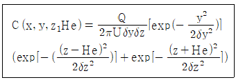
- Z: 지면으로부터 연직방향의 높이
- H: 굴뚝유효 높이
- δy, δz: 확산 계수(또는 확산폭)
- U: 굴뚝 내 배출가스의 배출속도
(정답률: 54%)
3. 다음 중 CO에 관한 설명으로 옳지 않은 것은?
- 가연성분의 불완전 연소시나 자동차에서 많이 발생된다.
- 대기 중에서 이산화탄소로 산화되기 어렵다.
- 수용성이므로 대기 중 농도는 강우에 의한 영향을 많이 받는다.
- 대기 중에서 평균 체류시간은 발생량과 대기 중 편균 농도로부터 1-3개월로 추정되고 있다.
(정답률: 60%)
4. 배출구로부터 배출된 오염물질이 확산ㆍ희석되는 과정으로부터 유효굴뚝높이(He)와 지표상의 최대도달농도(Cmax)와의 관계에 있어서, 일반적으로 He가 0.5배로 되면 Cmax값은 어떻게 되겠는가?
- 0.25배
- 0.5배
- 2배
- 4배
(정답률: 46%)
5. 다음 대기오염물질 중 공기에 대한 비중이 1.6정도이며, 질식성이 있고, 적갈색을 나타내며 자극성을 가진 가스는?
- NO
- SO2
- Cl2
- NO2
(정답률: 59%)
6. 태양복사에너지는 지면에 도달하기 전에 대기중에 있는 여러물질에 의해 산란되어 그 양이 줄어들게 된다. 특히 대기중의 먼지나 입자의 직경이 전자파의 파장과 거의 같은 크기의 경우, 하늘은 백색이나 뿌옇게 흐려져 일사량의 감소를 초래하며 간접적으로 대기오염도를 예측할 수 있는데 이와 같은 현상을 무엇이라 하는가?
- 연료산란(Fuel Scattering)
- 미산란(Mie Scattering)
- 광학 산란(Optical Scattering)
- 대기 약산란(Air Scattering)
(정답률: 44%)
7. 다음 중 유효굴뚝높이(Effective stack height)를 상승시키는 방법으로 옳은 것은?
- 배출가스의 토출속도를 줄인다.
- 배출가스의 양을 감소시킨다.
- 굴뚝 배출구의 직경을 확대한다.
- 배출가스의 온도를 높인다.
(정답률: 60%)
8. 입자상물질 중 Fume에 해당하는 입자 크기의 범위로 가장 알맞은 것은?
- 1㎛이하
- 10㎛이하
- 100㎛이하
- 1000㎛이하
(정답률: 53%)
9. 대기오염물질이 인체에 미치는 영향으로 옳지 않은 것은?
- 오존(O3)- 눈을 자극하고, 폐수종과 폐충혈 등을 유발시키며, 섬모운동의 기능장애를 일으킬 수 있다.
- 납(Pb)과 그 화합물- 다발성 신경염에 의해 사지의 가까운 부분을 강한 근육의 위축이 나타나며, 지각장애를 일으킨다.
- 크롬(Cr)- 만성중독은 코, 폐 및 위장의 점막에 병변을 일으키는 것이 특징이다.
- 비소(As)- 피부염, 주름살 부분의 궤양을 비롯하여, 색소침착, 손ㆍ발바닥의 각화, 피부암 등을 일으킨다.
(정답률: 53%)
10. 다음 중 산화성이 강한 물질이 아닌 것은?
- O3
- PAN
- NH3
- Aldehyde
(정답률: 60%)
11. 주오염물질과 그 발생원과의 연결로 가장 관계가 적은 것은?
- HF- 도장공업, 석유정제
- HCl- 소오다공업, 활성탄제조, 금속제련
- C6H6- 포르마린제조
- Br2- 염료, 의약품, 농약 제조
(정답률: 50%)
12. 다음 ( )안에 들어갈 말로 알맞은 것은?
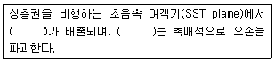
- SO2
- Cl
- CO
- NO
(정답률: 48%)
13. 성층권에 관한 다음 설명 중 옳지 않은 것은?
- 하층부의 밀도가 커서 매우 안정한 상태를 유지하므로, 공기의 상승이나 하강 등의 연직운동은 억제된다.
- 화산분출 등에 의하여 미세한 분진이 이 권역에 유입되며 수년간 남아 있게 되어 기후에 영향을 미치기도 한다.
- 성층권에서 고도에 따라 온도가 상승하는 이유는 성층권의 오존이 태양광선 중의 자외선을 흡수하기 때문이다.
- 오존의 밀도는 하층부(11km - 15km)일수록 높으며, 이와 같이 오존이 많이 분포한 층을 오존층이라 한다.
(정답률: 58%)
14. 굴뚝에서 배출되는 plume의 유효상승고를 Δh= Dㆍ
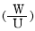
1.4 에 의해 계산하고자 한다. 굴뚝의 내경이 2m, 풍속이 3m/sec라고 할 때, Δh를 4m까지 상승시키려고 한다면 배출가스의 분출속도를 얼마로 하여야 하는가?- 약 5 m/sec
- 약 8 m/sec
- 약 11 m/sec
- 약 14 m/sec
(정답률: 54%)
15. 역사적인 대기오염의 사건별 특징이 잘못 연결된 것은?
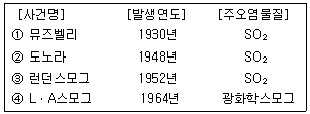
- ①
- ②
- ③
- ④
(정답률: 50%)
16. 도시대기 중의 오존(O3)농도에 관한 설명으로 옳은 것은?
- 기온이 낮은 아침에 높은 농도를 나타낸다.
- 일사량이 많은 계절에 농도가 높다.
- 계절에 관계없이 교통량과 비례한다.
- 구름이 많은 겨울에 농도가 높다.
(정답률: 77%)
17. 다음 ( )안에 들어갈 말로 알맞은 것은?
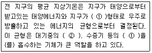
- ①: 자외선 ②: CO
- ①: 적외선 ②: CO
- ①: 자외선 ②: CO2
- ①: 적외선 ②: CO2
(정답률: 64%)
18. 대기중에서 광화학스모그 생성에 기여하는 탄화수소류 중 평균적으로 광화학 활성이 가장 강한 것은?
- 파라핀계 탄화수소
- 올레핀계 탄화수소
- 아세틸렌계 탄화수소
- 방향족 탄화수소
(정답률: 47%)
19. 복사역전(Radiation inversion)이 발생되기 쉬운 기상조건은?
- 하늘이 맑고, 바람이 약하며, 습도가 낮을 때
- 하늘이 흐리고, 바람이 강하며, 습도가 낮을 때
- 하늘이 흐리고, 바람이 약하며, 습도가 낮을 때
- 하늘이 맑고, 바람이 강하며, 습도가 높을 때
(정답률: 57%)
20. 아래 그림은 고도에 따른 대기의 기온 변화를 나타낸 것이다. 다음 중 대기중에 섞인 오염물질이 가장 잘 확산되는 기온 변화 형태는?
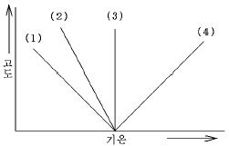
- (1)
- (2)
- (3)
- (4)
(정답률: 50%)
2과목: 연소공학
21. 연소 반응시 공기 중의 질소를 기원으로 하며, Zeldovich mechanism에 의해 질소산화물이 생성되는 기구는?
- 고온 NOx(Thermal NOx)
- 연료 NOx(Fuel NOx)
- 프롬프트 NOx(Prompt NOx)
- 순환 NOx(Circulation NOx)
(정답률: 42%)
22. 다음과 같은 특성을 가지는 액체연료로 가장 적합한 것은?
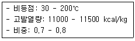
- 중유
- 경유
- 등유
- 휘발유
(정답률: 37%)
23. 옥탄(C8H18)을 완전연소 시킬 때의 AFR(Air Fuel Ratio)은? (단, 부피기준, AFR = moles air / moles fuel)
- 23.8
- 38.1
- 59.5
- 63.3
(정답률: 53%)
24. 미분탄 연소에 관한 설명으로 가장 거리가 먼 것은?
- 반응속도는 탄의 성질, 공기량 등에 따라 변하기는 하나, 연소에 요하는 시간은 대략 입자지름의 제곱에 비례한다.
- 같은 양의 석탄에서는 표면적이 대단히 커지고, 공기와의 접촉 및 열전달도 좋아지므로 작은 공기비로 완전연소가 된다.
- 재비산이 많고 집진장치가 필요하다.
- 점화 및 소화시 열손실은 크다. 부하의 변동에는 쉽게 적응할 수 있다.
(정답률: 32%)
25. 유류연소버너 중 유압식 버너에 관한 설명으로 옳지 않은 것은?
- 유압은 보통 50 - 90 kg/cm2 정도이다.
- 연료유의 분사각도는 기름의 압력, 점도 등으로 약간 달라지지만 40 - 90°정도의 넓은 각도로 할 수 있다.
- 대용량 버너 제작이 용이하다.
- 유량 조절 범위가 좁아(환류식 1:3, 비환류식 1:2) 부하변동에 적응하기 어렵다.
(정답률: 38%)
26. 등가비(Φ, equivalent ratio)와 연소상태와의 관계를 설명한 것 중 옳지 않은 것은?
- Φ=1 경우는 완전 연소로 연료와 산화제의 혼합이 이상적이다.
- Φ＞1 경우는 연료가 과잉
- Φ＜1 경우는 공기가 부족하며, 불완전연소가 발생
- Φ＞1 경우는 불완전 연소가 발생
(정답률: 39%)
27. 연소전의 온도를 To, 이론단열화염온도를 Tbt, 온도 To와 Tbt간의 연소가스 정압비열 Cp의 평균치를 Cpm, 습연소가스량을 Gw라 할 때, 저위발열량 HL의 관계식으로 옳은 것은?
- HL = GwㆍCpm(Tbt - To)
- HL = GwㆍCpm(To - Tbt)
- HL = (Gw/Cpm)×(Tbt - To)
- HL = (Cpm/Gw)×(Tbt - To)
(정답률: 39%)
28. 프로판(C3H8)과 에탄(C2H6)의 혼합가스 1Nm3를 완전연소 시킨 결과 배기가스 중 이산화탄소(CO2)의 생성량이 2.8Nm3이었다. 이 혼합가스의 mole비(C3H8/C2H6)는 얼마인가?
- 3.0
- 3.5
- 4.0
- 4.5
(정답률: 38%)
29. 다음 연료 중 착화온도가 가장 높은 것은?
- 갈탄(건조)
- 무연탄
- 역청탄
- 목재
(정답률: 39%)
30. 중유에 관한 다음 설명 중 옳지 않은 것은?
- 점도가 낮을술고 유동점이 낮아진다.
- 비중이 클수록 유동점과 점도는 감소하고, 잔류탄소 등이 증가한다.
- 비중이 클수록 발열량이 낮아지고 연소성이 나빠진다.
- 중유는 일반적으로 점도를 중심으로 3종으로 대별된다.
(정답률: 48%)
31. 석탄 사용 가열로의 배기가스를 분석한 결과 CO2: 15%, O2: 5%, N2: 80%였다. 이 때 공기비는 대략 얼마인가? (단, 연료 중 질소는 무시한다.)
- 1.31
- 1.74
- 1.92
- 2.12
(정답률: 44%)
32. 어떤 액체연료의 조성이 무게비로 탄소: 81.0%, 수소: 14.0%, 황: 2.0%, 산소: 3.0%인 연료가 있다. 이 연료 65kg을 완전연소시킬 때 생성되는 이산화탄소(CO2)의 량?
- 154kg
- 193kg
- 223kg
- 258kg
(정답률: 30%)
33. 부피비율로 프로판: 30%, 부탄: 70%로 이루어진 혼합가스 1L를 완전연소 시키는데 필요한 이론공기량은?
- 23.8L
- 28.8L
- 31.8L
- 35.8L
(정답률: 56%)
34. 기체연료에 관한 설명으로 가장 적절한 것은?
- 적은 과잉공기로 완전연소가 가능하다.
- 연소율의 가연범위(Turn-down Ratio)가 좁다.
- 저장 및 수송이 용이하다.
- 회분 및 유해물질의 배출량이 많다.
(정답률: 50%)
35. 공기비가 클 경우 일어나는 현상에 관한 설명으로 옳지 않은 것은?
- 연소실내 연소온도 감소
- 배기가스에 의한 열손실이 증대
- 가스폭발의 위험과 매연이 증가
- SO2, NO2의 함량이 증가하여 부식이 촉진
(정답률: 36%)
36. 최적 연소부하율이 100,000 kcal/m3ㆍhr인 연소로를 설계하여 발열량이 5000 kcal/kg인 석탄을 200kg/hr로 연소하고자 한다면 이 때 필요한 연소로의 연소실 용적은? (단, 열효율은 100%)
- 200m3
- 100m3
- 20m3
- 10m3
(정답률: 57%)
37. 배출가스 분석 결과 CO2= 15.6%, O2= 5.8%, N2= 78.6%, CO=0.0%일 때 CO2max (%)와 공기 과잉계수 m은?
- CO2max: 19.5, m: 1.25
- CO2max: 20.9, m: 1.34
- CO2max: 21.6, m: 1.38
- CO2max: 22.2, m: 1.41
(정답률: 36%)
38. 연소 시 가연물의 구비조건으로 옳지 않은 것은?
- 화학적으로 활성이 강할 것
- 활성화 에너지가 클 것
- 표면적이 클 것
- 반응열이 클 것
(정답률: 48%)
39. 연소장치의 특성에 관한 다음 설명 중 옳지 않은 것은?
- 유동층 연소는 다른 연소법에 비해 NOx생성 억제가 잘되고, 화염층을 작게 할 수 있으므로 장치의 규모를 작게 할 수 있다.
- 산포식 스토커, 계단식 스토커에 의한 연소방식은 화격자 연소장치에 속한다.
- 미분탄을 사용하는 연소시설에서는 화염의 전파속도는 기체연료에 비해 작으며, 만일 버너로부터 분출속도가 클 경우에는 역화의 우려가 발생할 수 있다.
- 미분탄 연소는 사용연료의 범위가 넓고, 스토커 연소에 적합하지 않은 점결탄과 저발열량탄 등도 사용할 수가 있다.
(정답률: 58%)
40. 수소: 12%, 수분: 0.3%이 포함된 고체연료의 고위발열량이 10000kcal/kg일 때 이 연료의 저위 발열량은?
- 9220 kcal/kg
- 9350 kcal/kg
- 9680 kcal/kg
- 9740 kcal/kg
(정답률: 40%)
3과목: 대기오염 방지기술
41. 물을 가압 공급하여 함진가스를 세정하는 형식의 가압수식 스크러버가 아닌것은?
- Venturi Scrubber
- Impulse Scrubber
- Spray Tower
- Jet Scrubber
(정답률: 38%)
42. 배출가스 중의 염소를 충전탑에서 물을 흡수액으로 사용하여 흡수시킬 때 효율이 85%이었다. 동일한 조건에서 95%의 효율을 얻기 위해서는 이론적으로 충전층의 높이를 몇 배로 하면 되는가?
- 2.36
- 2.14
- 1.86
- 1.58
(정답률: 29%)
43. 중력식집진장치의 이론적 집진효율을 계산하는데 응용되는 Stoke Law를 만족하는 가정에 부합되지 않는 것은?
- 10-4 ＜ NRe ＜ 0.6
- 구는 일정한 속도로 운동한다.
- 구는 강체이다.
- 전이영역흐름(Intermediate flow)
(정답률: 46%)
44. 여과집진장치 중 여재에 관한 설명으로 옳은 것은?
- 털어서 떨어뜨리는 방식에 의하여 높은 집진율을 얻기 위해서는 연속적으로 떨어뜨리는 방식을 취한다.
- 고농도 함진배출가스의 처리에는 간헐적으로 떨어뜨리는 방식을 취함으로써 효율의 증대를 가져올 수 있다.
- 목면은 값이 저렴하나 흡수성이 높고, polyester계 섬유는 내산성과 내구성이 우수하다.
- 직포는 장섬유와 단섬유로 구성되어 있는데, 장섬유는 1차 부착층의 형성이 빠르고 먼지의 포집율도 크고, 단섬유는 강도가 높고 부착성이 강한 먼지의 포집에 적당하다.
(정답률: 47%)
45. 황함량이 2.5%인 중유를 9ton/hr으로 연소하는 소각시설의 배출가스를 NaOH로 탈황하고자 할 때 이론적으로 필요한 NaOH양(kg/hr)은? (단, 탈황율은 98% 기준)
- 422.3 kg/hr
- 472.3 kg/hr
- 515.3 kg/hr
- 551.3 kg/hr
(정답률: 36%)
46. 악취물질의 처리방법에 관한 다음 설명 중 옳지 않은 것은?
- 통풍 및 희석: 높은 굴뚝을 통해 방출시켜 대기중에 분산 희석시키는 방법이다.
- 흡착에 의한 처리: 유량이 비교적 적은 경우 활성탄등 흡착제를 이용하여 냄새를 제거하는 방식이다.
- 응축법에 의한 처리: 냄새를 가진 가스를 냉각응축시키는 것으로 유기용제를 비교적 저농도(50g/Sm3 이하)로 함유한 배기가스에 적용된다.
- 촉매산화법은 백금이나 금속산화물 등의 촉매를 이용하여 250-450℃ 정도의 온도에서 산화시키는 방법이다.
(정답률: 34%)
47. 여과집진장치의 여과방식 중 내면여과에 관한 설명으로 옳지 않은 것은?
- 여재를 비교적 엉성하게 틀 속에 충전하여 이것을 여과층으로 하여 함진가스 중의 먼지입자를 포집하는 방식으로 여재내면에서 포집된다.
- package filter, 방사성 먼지용 air filter 등이 이 여과방식에 속하고, 여과속도가 적고, 압력손실은 보통 30mmH2O 이하이다.
- 습식인 경우 부착된 입자의 제거가 곤란하므로 일정량 이상의 입자가 부착되면 새로운 여재로 교환해야 한다.
- 이 방식은 주로 고농도의 함진가스의 오염공기를 처리할 때 사용된다.
(정답률: 25%)
48. 세정식집진장치의 원리에 대한 다음 설명 중 옳지 않은 것은?
- 배기가스를 증습하면 입자의 응집이 낮아진다.
- 액적에 입자가 충돌하여 부착된다.
- 미립자가 확산되면 액적과의 접촉이 증가된다.
- 액막과 기포에 입자가 접촉하여 부착된다.
(정답률: 39%)
49. 처리가스량 20000m3/hr, 압력손실이 100mmH2O 인 집진장치의 송풍기 소요동력은 약 얼마인가? (단, 송풍기 효율은 60%, 여유율은 1.3으로 한다.)
- 9 kW
- 12 kW
- 15 kW
- 18 kW
(정답률: 39%)
50. 레이놀드 수(Reynold Number)에 관한 설명으로 옳지 않은 것은? (단, 유체 흐름 기준)
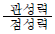
으로 나타낼 수 있다.- 무차원 수이다.
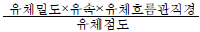
으로 나타낼 수 있다.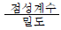
로 나타낼 수 있다.
(정답률: 54%)
51. 중력식 집진장치에 관한 설명으로 옳지 않은 것은?
- 중력에 의한 자연침강을 이용하는 방법으로 주로 입자의 크기가 50㎛ 이상의 입자상 물질을 처리하는데 사용된다.
- 함진가스의 온도변화에 의한 영향을 거의 받지 않는다.
- 침강실의 높이는 낮고, 길이는 길수록 집진율이 높아진다.
- 유지비는 적게 드나 시설의 규모가 커 설치비가 많이들며 신뢰도가 낮다.
(정답률: 30%)
52. 전기집진장치의 집진율과 집진기 변수와의 관계식으로 올바르게 나타낸 것은? (단, E: 집진율, V: 입자의 유속(m/sec), A: 집진극의 면적(m2), Q: 가스유량(m3/sec))
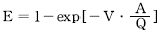
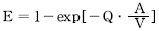
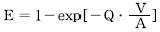
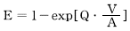
(정답률: 50%)
53. 흡착제의 종류와 용도와의 연결로 거리가 먼 것은?
- 활성탄- 용제회수, 가스정제
- 알루미나- 휘발유 및 용제 정제
- 실리카겔- NaOH 용액 중 불순물 제거
- 보오크사이트- 석유 중의 유분제거, 가스 및 용액건조
(정답률: 39%)
54. 세정식집진장치 중 Spray Tower에 관한 설명으로 옳지 않은 것은?
- 탑 내에 몇 개의 살수노즐을 사용하여 함진가스와 향류접촉시켜 분진을 제거한다.
- 구조가 간단하고 보수가 용이하다.
- 액가스비는 10-50 L/m3 이다.
- 충전제를 쓰지 않기 때문에 압력손실의 증가는 없다.
(정답률: 43%)
55. 전기집진장치에서 입구 분진농도가 16g/Sm3, 출구 분진농도가 0.1g/Sm3이었다. 출구 분진농도를 0.03g/Sm3 으로 하기 위해서는 집진극의 면적을 약 몇% 넓게 하면 되는가? (단, 다른 조건은 무시한다.)
- 8%
- 16%
- 24%
- 32%
(정답률: 40%)
56. 전기집진장치의 장애현상 중 역전리 현상(back corona)의 원인과 가장 거리가 먼 것은?
- 입구의 유속이 클 때
- 미분탄 연소 시
- 분진 비저항이 너무 클 때
- 배출가스의 점성이 클 때
(정답률: 29%)
57. 아래의 유해가스들을 처리하기 위한 방법으로 가장 거리가 먼 것은?
- SiF4 - 활성탄 흡착법
- SO2 - 석회석 주입법
- Cl2 - 흡수법
- Dust gas - 사이클론, 스크러버
(정답률: 32%)
58. 유입구 폭이 15cm, 유효회전수가 6회인 사이클론에 아래 상태와 같은 함진가스를 처리하고자 할 때, 이 함진가스에 포함된 입자의 절단입경(㎛)은?
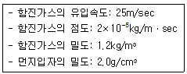
- 3.78
- 4.23
- 5.89
- 6.17
(정답률: 20%)
59. 어떤 유해가스의 흡착 실험을 수행한 결과 흡착제의 단위질량 당 흡착된 용질량(χ/m)과 출구가스농도 Co 데이터를 얻었다. 이 실험데이터로부터 log(Co) 대 log(χ/m)에 대하여 플로트 하엿더니 다음과 같은 직선을 얻었다. 흡착은 Freundlich 등온흡착식
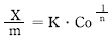
을 만족할 때, 등온상수 n과 K값을 구하면?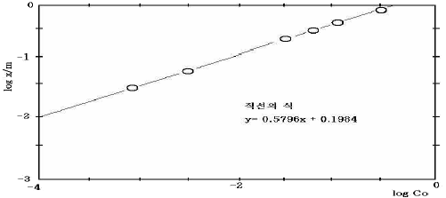
- n= 1.725, K= 0.198
- n= 0.580, K= 0.198
- n= 1.725, K= 1.579
- n= 1.725, K= 5.040
(정답률: 45%)
60. 450K의 배기가스가 1250ppm의 탄화수소와 95ppm의 일산화탄소를 함유할 때, 재연소기로 900에서 처리한 후 탄화수소와 일산화탄소가 각각 85ppm, 250ppm이 되었다. 탄화수소만 고려할 경우와 Los Angeles Country Rule 66에 의한 처리효율은 각각 얼마인가? (단, Rule66의 공식은 다음과 같다.)
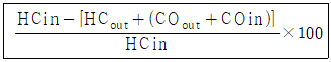
- 95.6%, 65.6%
- 95.6%, 70.2%
- 93.2%, 80.8%
- 93.2%, 85.6%
(정답률: 31%)
4과목: 대기오염 공정시험기준(방법)
61. 다음은 굴뚝배출가스 중 아황산가스를 연속적으로 자동측정하는 방법에 관한 설명이다. 옳지 않은 것은?
- 90% 교정가스를 스팬가스라고 한다.
- 교정가스는 공인기관의 보정치가 제시되어 있는 표준가스로 연속자동측정기 최대 눈금치의 약 50%와 90%에 해당하는 농도를 갖는다.
- 제로가스는 공인기관에 의해 아황산가스 농도가 3ppm미만으로 보증된 표준가스를 말한다.
- 보정이란 보다 참에 가까운 값을 구하기 위하여 판독값 또는 계산값에 어떤 값을 가감하는 것 또는 그 값을 말한다.
(정답률: 29%)
62. 흡광차분광법(Differential Optical Absorption Spectroscopy)에 관한 설명으로 옳지 않은 것은?
- 흡광차분광법의 분석장치는 분석기와 광원부로 나누어지며, 분석기 내부는 분광기, 샘플채취부, 검지부, 분석부, 통신부 등으로 구성된다.
- 광원부는 발ㆍ수광부 및 광케이블로 구성되며, 외부 환경에 영향이 없는 구조로 구성된다.
- 일반적으로 빛을 조사하는 발광부와 5-10m 정도 떨어진 곳에 설치되는 수광부 사이에 형성되는 빛의 이동경로를 통과하는 가스를 실시간으로 분석한다.
- 발광부의 광원은 제논램프를 사용하며, 제논램프를 사용하며, 제논램프는 180-2850nm의 파장대역을 갖는다.
(정답률: 38%)
63. 가스크로마토그래프법에서 이론단수가 1600 되는 분리관이 있다. 보유시간이 10min되는 피이크의 밑부분 폭(피이크 좌우 변곡점에서 접선이 자르는 바탕선의 길이)은 얼마인가? (단, 기록지 이동속도는 5mm/min, 이론단수는 모든 성분에 대하여 같다고 한다.)
- 1mm
- 2mm
- 5mm
- 10mm
(정답률: 41%)
64. 다음 중 연료의 연소, 금속제련 또는 화학반응 공정 등에서 배출되는 굴뚝 배출가스 중의 일산화탄소 분석방법이라 볼 수 없는 것은?
- 가스크로마토 그래피법
- 정전위 전해법
- 비분산 적외선 분석법
- 용액전도율법
(정답률: 50%)
65. 다음 분석대상 가스 중 여과재로 “카아보란덤”을 사용하는 것은?
- 포름알데히드
- 브롬
- 이황화탄소
- 불소화합물
(정답률: 27%)
66. 분석대상가스의 종류별, 채취관 및 도관 재질의 연결로 옳지 않은 것은?
- 암모니아- 스테인레스강
- 일산화탄소- 석영
- 질소산화물- 스테인레스강
- 이황화탄소- 보통강철
(정답률: 40%)
67. 티오시안산제이수은법으로 염화수소를 분석할 때 필요한 시약과 관계가 없는 것은?
- 질산은 용액
- 티오시안산제이수은용액
- 황산제이철암모늄용액
- 메틸알코올
(정답률: 53%)
68. 다음 중 굴뚝단면이 서서히 변하는 경우의 원형굴뚝의 환산 하부직경 계산식으로 옳은 것은?
- (하부직경 + 선정된 측정공 위치의 직경)/ 2
- (하부직경 + 선정된 측정공 위치의 직경)/ 4
- (하부직경 + 선정된 측정공 위치의 직경)/ 6
- (하부직경 + 선정된 측정공 위치의 직경)/ 8
(정답률: 32%)
69. 비분산 적외선 분석법(Nondispersive Infrared Analysis)에서 사용되는 용어에 관한 설명으로 옳지 않은 것은?
- 비교가스는 시료셀에서 적외선 흡수를 측정하는 경우 대조가스로 사용하는 것으로 적외선을 흡수하지 않는 가스를 말한다.
- 비교셀은 시료셀과 동일한 모양을 가지며 아르곤 또는 질소와 같은 불활성 기체를 봉입하여 사용한다.
- 광학필터는 시료광속과 비교광속을 일정주기로 단속시켜, 광학적으로 변조시키는 것으로 단속방식에는 1-20Hz의 교호단속 방식과 동시단속 방식이 있다.
- 시료셀은 시료가스가 흐르는 상태에서 양단의 창을 통해 시료광속이 통과하는 구조를 갖는다.
(정답률: 34%)
70. 가스크로마토그래프의 설치조건(장소, 전기관계)으로 가장 거리가 먼 것은?
- 분석에 사용하는 유해물질을 안전하게 처리할 수 있는 곳이어야 한다.
- 접지점의 접지저항은 15-20Ω 범위이내여야 한다.
- 전원변동은 지정전압의 10% 이내로서 주파수 변동이 없는 것이어야 한다.
- 실온 5-35℃, 상대습도 85% 이하로 직사광선이 쪼이지 않는 곳이어야 한다.
(정답률: 38%)
71. 시험분석에 사용하는 용어 및 기재사항에 관한 설명으로 옳지 않는 것은?
- '약'이란 그 무게 또는 부피에 대하여 ±10% 이상의 차가 있어서는 안된다.
- '정확히 단다'라 함은 규정한 량의 검체를 취하여 분석용 저울로 0.1mg까지 다는 것을 뜻한다.
- '항량이 될 때까지 건조한다 또는 강열한다.'라 함은 따로 규정이 없는 한 보통의 건조방법으로 1시간 더 건조 또는 강열할 때 전후무게의 차가 0.3mg이하일 때를 뜻한다.
- 액체성분의 양을 '정확히 취한다.'라 함은 홀피펫 메스플라스크 또는 이와 동등 이상의 정도를 갖는 용량계를 사용하여 조작하는 것을 뜻한다.
(정답률: 17%)
72. 환경대기중 휘발성유기화합물(VOCs)의 시험방법에 사용되는 용어에 대한 설명으로 옳지 않은 것은?
- 머무름부피(Retention volume): 흡착관으로부터 분석물질을 탈착하기 위하여 필요한 운반가스의 부피를 측정함으로써 결정된다.
- 흡착관의 안정화(Conditioning): 흡착관을 사용하기 전에 열탈착기에 의해서 보통 350℃(흡착제별로 사용최고온도를 고려하여 조정)에서 헬륨가스 25mL/min으로 적어도 1시간 동안 안정화시킨 후 사용한다.
- 열탈착: 열과 불활성가스를 이용하여 흡착제로부터 휘발성유기화합물을 탈착시켜 기체크로마토그래피로 전달하는 과정이다.
- 2단 열탈착: 흡착제로부터 분석물질을 열탈착하여 저온 농축관에 농축한 다음 저온농축관을 가열하여 농축된 화합물을 기체크로마토그래피로 전달하는 과정이다.
(정답률: 34%)
73. 다음 중 질소산화물 측정방법으로 옳지 않은 것은? (단, 굴뚝배출가스 중 질소화합물을 연속적으로 자동측정하는 방법)
- 용액전도율법
- 자외선흡수법
- 적외선흡수법
- 화학발광법
(정답률: 39%)
74. 크로모트로핀산법으로 포름알데히드를 정량할 때 흡수 발색액 제조에 필요한 시약은?
- CH3COOH
- H2SO4
- NaOH
- NH4OH
(정답률: 32%)
75. 배출가스 중 카드뮴 화합물의 농도를 측정하기 위하여 채취한 시료가 다량의 유기물 유리탄소를 함유하고 있었다. 이 시료의 처리방법으로 가장 적합한 것은?
- 염산법
- 질산-염산법
- 저온회화법
- 질산-과산화수소수법
(정답률: 25%)
76. 굴뚝 내의 온도(θs)는 133℃이고, 정압(Ps)은 15mmHg이며 대기압(Pa)은 745mmHg이다. 이 때 굴뚝내의 배출가스 밀도를 구하면? (단, 표준상태의 공기의 밀도(γo)는 1.3kg/Sm3이고, 굴뚝내 기체 성분은 대기와 같다.)
- 0.744 kg/m3
- 0.874 kg/m3
- 0.934 kg/m3
- 0.984 kg/m3
(정답률: 38%)
77. 대기오염공정시험방법 중 환경대기중의 아황산가스 측정방법으로 옳지 않은 것은?
- 산정량 수동법
- 용액 전도율법
- 적외선 분석법
- 자외선 형광법
(정답률: 32%)
78. 굴뚝에서 배출되는 염소가스 분석방법 중 오르토톨리딘법에 관한 설명으로 옳은 것은?
- 염소표준 착색액으로 요오드산 칼륨용액을 사용한다.
- 염소표준용액은 N/100 KMnO4 용액으로 표정한다.
- 시료는 1L/min의 흡인속도로 채취한다.
- 시료가스 흡인후 약 20℃에서 5-20분 사이에 분석용시료 착색액의 흡광도를 측정한다.
(정답률: 39%)
79. 배기가스 중 황산화물을 분석하기 위하여 중화적정법에 의해 술파민산 표준시약 2.0g을 물에 녹여 250mL로 하고, 이 용액 25mL를 분취하여 N/10-NaOH 용액으로 중화적정한 결과 21.6mL가 소요되었다. 이 때 N/10-NaOH용액의 factor값은? (단, 술파민산의 분자량은 97.1이다.)
- 0.90
- 0.95
- 1.00
- 1.⑤
(정답률: 38%)
80. 다음은 굴뚝 등에서 배출되는 배출가스 중의 질소화합물을 아연 환원 나프틸에틸렌디아민법에 의해 분석하는 방법에 관한 설명이다. ( )안에 들어갈 말로 올바르게 연결된 것은?
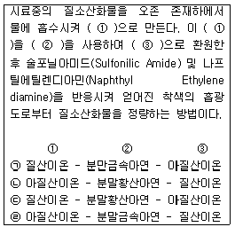
- ㉠
- ㉡
- ㉢
- ㉣
(정답률: 50%)
5과목: 대기환경관계법규
81. 사업자는 대기환경보전법령에 의거 자가측정에 관한 기록과 측정시 사용한 여과지 및 시료채취기록지는 대기오염공정시험방법에 따라 최종기재 및 측정한 날부터 얼마동안 보존하여야 하는가?
- 2년
- 1년
- 6월
- 3월
(정답률: 43%)
82. 대기환경보전법규정에 의한 비산먼지발생사업(건설업)중 시ㆍ도지사에게 신고해야 할 대상사업이 아닌 것은?
- 연면적 3000m2인 건축물 축조공사(건축물 증ㆍ개축 및 재축을 포함)
- 공사면적 3000m2인 토목공사
- 면적합계 3000m2인 조경공사
- 연면적 5000m2인 지반조성공사 중 건축물해체공사
(정답률: 56%)
83. 대기환경보전법령에 의한 초과부과금 부과대상 오염물질이 아닌 것은?
- 이황화탄소
- 먼지
- 염소
- 석면
(정답률: 38%)
84. 다음 중 오존(O3)의 환경기준으로 옳게 연결된 것은?
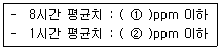
- ① 0.03 ② 0.06
- ① 0.⑤ ② 0.10
- ① 0.06 ② 0.10
- ① 0.08 ② 0.12
(정답률: 36%)
85. 대기오염경보단계별 오염물질의 농도기준에 관한 설명으로 알맞지 않은 것은?
- 기상조건 등을 검토하여 해당지역내 대기자동측정소의 오존농도가 0.12ppm 이상일 때 주의보를 발령한다.
- 기상조건 등을 검토하여 해당지역내 대기자동측정소의 오존농도가 0.3ppm 이상일 때 중대경보를 발령한다.
- 오존농도는 1시간 평균농도를 기준으로 한다.
- 해당지역내 1개 측정소라도 경보단계별 발령기준을 초과하면 경보를 발령한다.
(정답률: 50%)
86. 부과금 징수유예 사유로 가장 거리가 먼 것은?
- 천재지변 기타 재해를 입어 사업자의 재산에 심한 손실이 있는 경우
- 사업에 현저한 손실을 입어 중대한 위기에 처한 경우
- 초과부과금이 1천만원을 초과하는 경우
- 기본부과금이 1천만원을 초과하는 경우
(정답률: 36%)
87. 환경정책기본법령상 대기환경기준이 설정되어 있지 않은 항목은?
- 탄화수소(HC)
- 아황산가스(SO2)
- 일산화탄소(CO)
- 이산화질소(NO2)
(정답률: 39%)
88. 대기환경보전법규상 기후ㆍ생태계변화 유발물질이 아닌 것은?
- 일산화탄소
- 과불화탄소
- 수소불화탄소
- 아산화질소
(정답률: 58%)
89. 대기환경보전법규정에 의한 대기오염방지시설과 가장 거리가 먼 것은? (단, 방지시설에는 방지시설에 부대되는 기계ㆍ기구류(예비용을 포함한다.)등을 포함한다.)
- 흡착에 의한 시설
- 산화ㆍ환원에 의한 시설
- 흡수에 의한 시설
- 간접연소에 의한 시설
(정답률: 48%)
90. 조업정지가 주민의 생활, 국민경제 기타 공익에 현저한 지장을 초래할 우려가 있다고 인정되는 경우에 조업정지 처분에 갈음하여 부과할 수 있는 과징금의 최대 기준은?
- 1억원
- 2억원
- 3억원
- 5억원
(정답률: 25%)
91. 대기환경보전법규상 배출시설인 폐가스 소각시설은 소각능력이 시간당 얼마 이상이어야 하는가? (단, 소각보일러를 포함하되, 규정에 적합한 휘발성유기화합물 배출억제ㆍ방지시설과 폐기물매립시설에서 발생되는 가스를 소각하는 시설은 제외한다.)
- 25kg
- 50kg
- 100kg
- 200kg
(정답률: 42%)
92. 대기환경보전법상 규정된 “가스”의 정의는?
- 물질의 연소ㆍ합성ㆍ분해시에 발생하거나 물리적 성질에 의하여 발생하는 기체상 물질
- 연료의 연소ㆍ합성ㆍ증발시에 발생하거나 화학적 성질에 의하여 발생하는 기체상 물질
- 물질의 연소ㆍ합성ㆍ분해시에 발생하거나 화학적 성질에 의하여 발생하는 기체상 물질
- 연료의 연소ㆍ합성ㆍ증발시에 발생하거나 물리적 성질에 의하여 발생하는 기체상 물질
(정답률: 31%)
93. 배출허용기준 300(12)ppm에서 (12)의 의미는?
- 해당배출허용농도(백분율)
- 해당배출허용농도(ppm)
- 표준산소농도(O2의 백분율)
- 표준산소농도(O2의 ppm)
(정답률: 39%)
94. 다음은 고체연료 사용시설 설치기준(석탄사용시설)에 관한 내용이다. ( )안에 들어갈 말로 알맞은 것은?
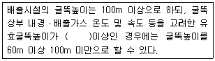
- 150m
- 250m
- 320m
- 440m
(정답률: 39%)
95. 경유를 사용연료로 하는 경자동차의 배출가스 보증기간으로 알맞은 것은? (단, 2006년 1월 1일 이후 제작 자동차 기준)
- 1년 또는 20000km
- 2년 또는 40000km
- 3년 또는 60000km
- 5년 또는 80000km
(정답률: 29%)
96. 대기환경보전법규상 배출시설 및 방지시설 운영일지의 운영기록 보존기간의 기준은?
- 최종기재를 한 날부터 3개월간 보존하여야 한다.
- 최종기재를 한 날부터 6개월간 보존하여야 한다.
- 최종기재를 한 날부터 1년간 보존하여야 한다.
- 최종기재를 한 날부터 2년간 보존하여야 한다.
(정답률: 30%)
97. 대기환경보전법규상 모든 대기배출시설에서 배출되는 시안화수소의 배출허용기준은?
- 10ppm 이하
- 5ppm 이하
- 3ppm 이하
- 1ppm 이하
(정답률: 22%)
98. 공동방지시설을 설치하고자 하는 공동방지시설운영기구의 대표자가 시ㆍ도지사에게 제출하여야 하는 서류로 거리가 먼 것은?
- 공동방지시설의 위치도(축척 2만5천분의 1의 지형도를 말한다.)
- 공동방지시설에 대한 건축물관리대장 및 토지등기부등본
- 사업장별 원료사용량 및 제품생산량을 기재한 서류와 공정도
- 공동방지시설의 운영에 관한 규약
(정답률: 29%)
99. 대기환경보전법에서 규정하는 용어 중 “대기오염물질배출시설”로 옳은 것은?
- “대기오염물질배출시설”이라 함은 대기오염물질을 대기에 배출하는 시설물ㆍ기계ㆍ기구 기타 물체로서 시, 도지사가 정하는 것을 말한다.
- “대기오염물질배출시설”이라 함은 대기오염물질을 대기에 배출하는 시설물ㆍ기계ㆍ기구 기타 물체로서 환경부령으로 정하는 것을 말한다.
- “대기오염물질배출시설”이라 함은 대기오염물질을 대기에 배출하는 시설물ㆍ기계ㆍ기구 기타 물체로서 국무총리령으로 정하는 것을 말한다.
- “대기오염물질배출시설”이라 함은 대기오염물질을 대기에 배출하는 시설물ㆍ기계ㆍ기구 기타 물체로서 대통령령으로 정하는 것을 말한다.
(정답률: 34%)
100. 먼지ㆍ황산화물 및 질소산화물의 연간 발생량 합계가 20톤 이상 80톤 미만인 시설인 경우의 자가측정 횟수 기준은? (단, 측정항목은 규정에 의한 배출허용기준이 적용되는 오염물질이며, 비산먼지는 제외한다.)
- 주 1회 이상
- 매 2월 1회 이상
- 월 2회 이상
- 매반기 1회 이상
(정답률: 34%)